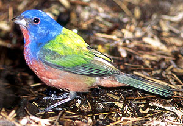

| These photographs accompany records that have been recently submitted to the committee. This record
was NOT ACCEPTED because of questions about its natural occurrence.  Painted Bunting Passerina ciris 19 April 1997, Corn Springs, RIV 1997-090 © 1997 Jay Furhman Back to CBRC Rare Bird Photos |